Seventeen industries.
One engine.
An edition is an industry: the departments it runs, as modules, each owned and accountable on its own, on the same map, catalog and sign-in. 130 department modules in all. Hover a card to see it running.
Government & cities
3 editionsThe agency's whole picture: city, continent, land.

The smart-city and government view.
Explore Atlas →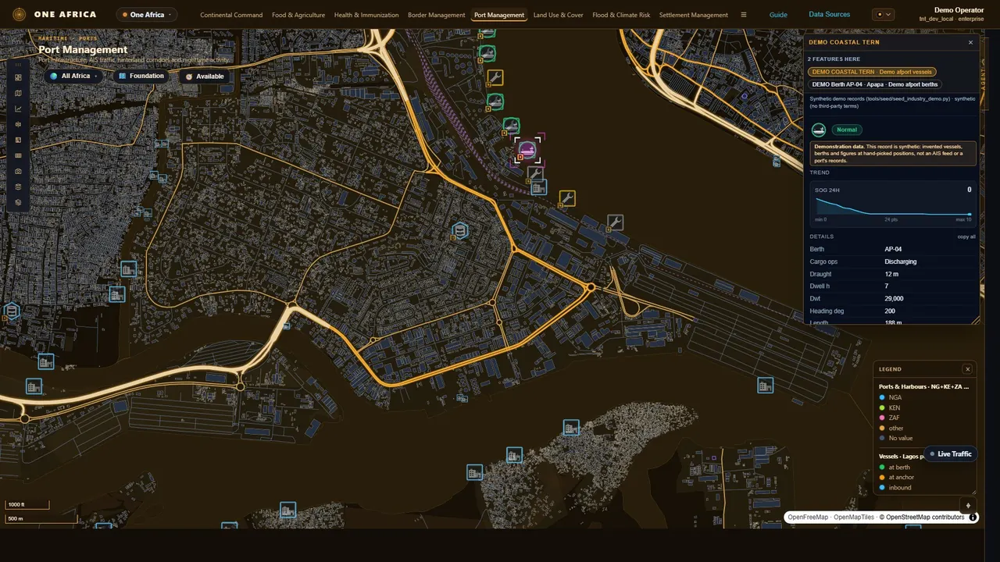
Continental programmes on one map.
Explore One Africa →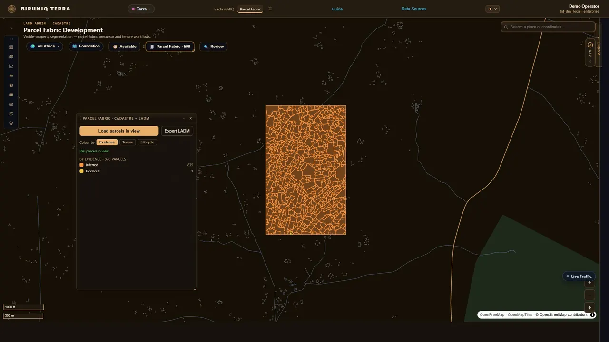
From drone imagery to candidate parcels. Proposals, not titles.
Explore Terra →Public safety & crisis
4 editionsWatch named places, score the infrastructure, run the incident.

Named sites, scored, with the reasons behind the score.
Explore Sentry →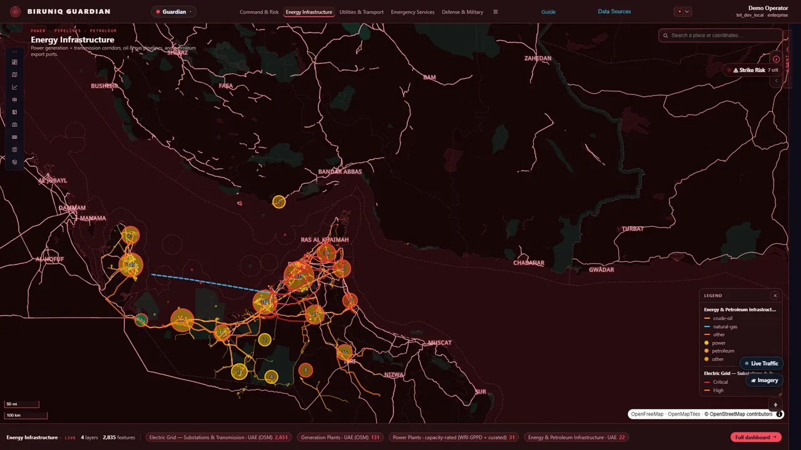
Score the infrastructure itself. Then stand it up in 3D.
Explore Guardian →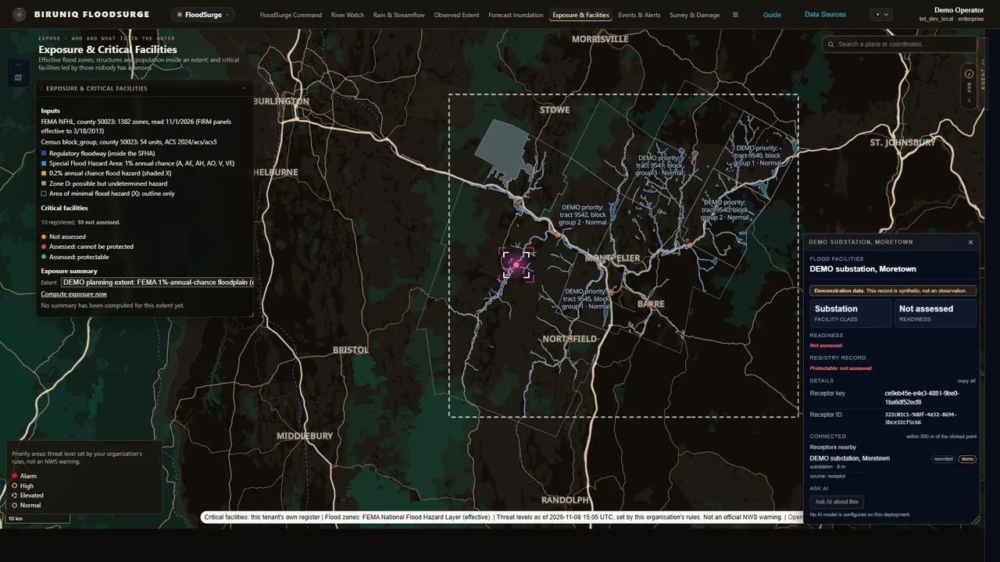
Critical facilities against the flood zones, the rivers and the forecast.
Explore FloodSurge →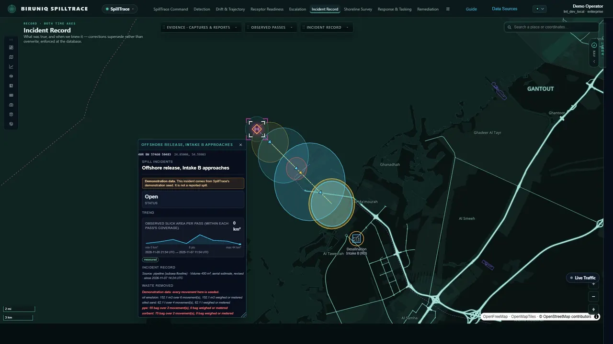
The incident, the slick on every pass, and what lies in its path.
Explore SpillTrace →Defence & maritime
2 editionsThe command picture, and what moves at sea without a signal.

The command picture. Every protected asset, with its own record.
Explore WatchFloor →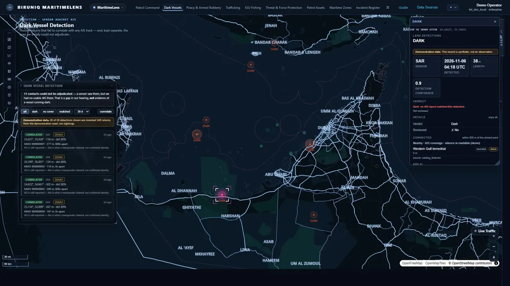
Dark vessels. And it says so when it can't tell.
Explore MaritimeLens →Utilities & energy
3 editionsNetworks, storage, generation and the plant itself.

Outages, transformers, transmission. Nine department cockpits.
Explore Grid →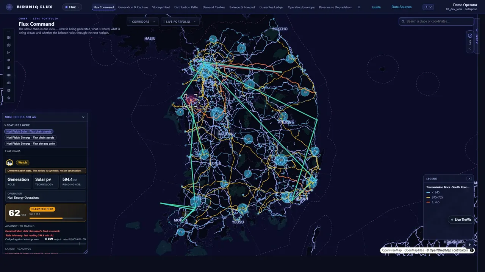
Storage, generation and corridors, each against its limit.
Explore Flux →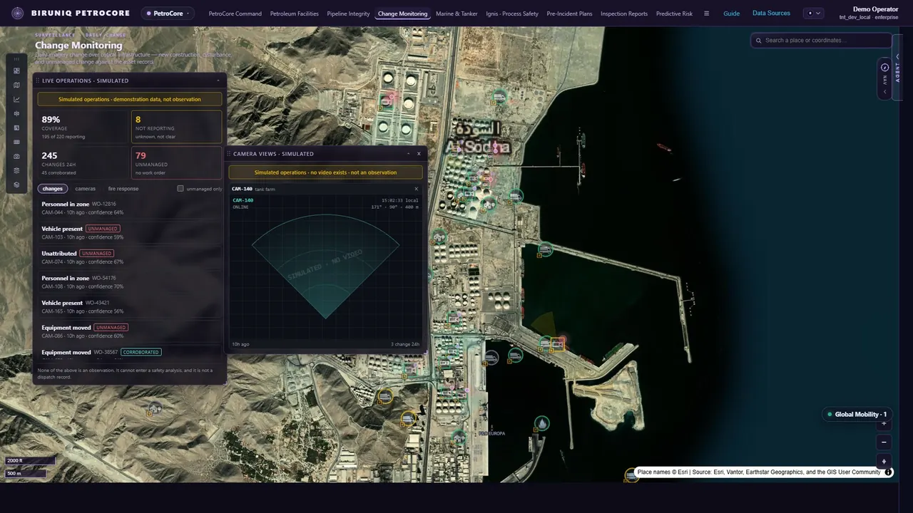
Watch the site for change, camera by camera.
Explore PetroCore →Transport & infrastructure
3 editionsAirports, roads and bridges, and the projects that build them.

Airport lighting, surfaces, signage and traffic.
Explore Tower →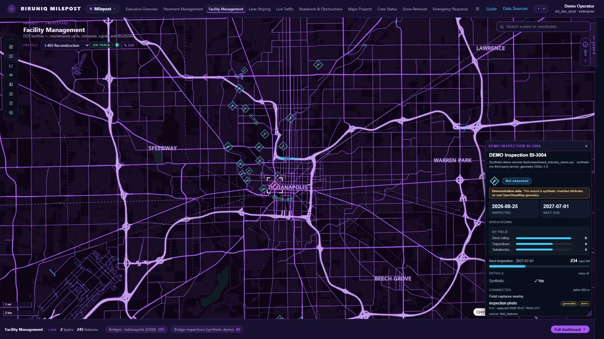
Bridges, pavement, roadwork and snow.
Explore Milepost →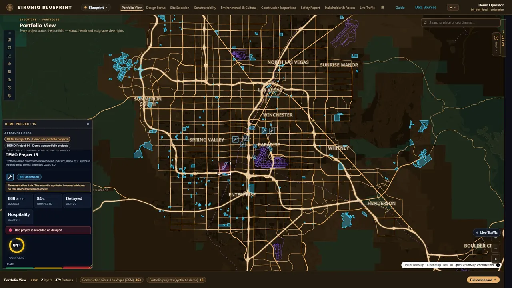
Every project's health, from site selection to inspection.
Explore Blueprint →Land & environment
2 editionsFields, habitat, groundwater and the evidence on the ground.

A crop calendar, a crop index, and field boundaries the model drew.
Explore Harvest →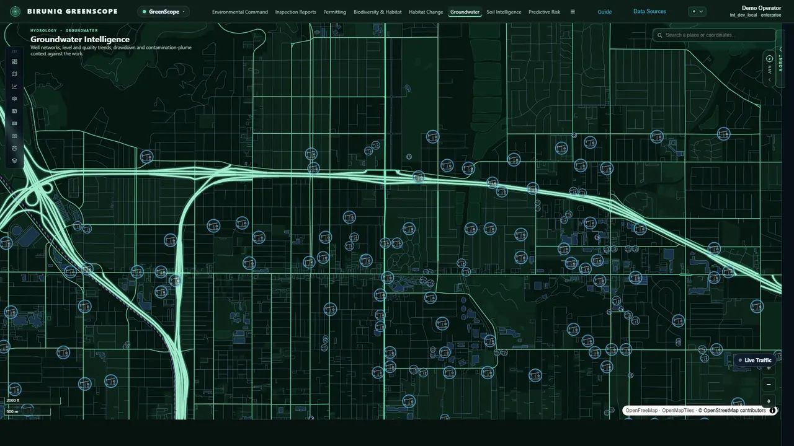
Findings with photos, risk by zone, and every monitoring well.
Explore GreenScope →In design
1 editionFireLens
Named and scoped, with no code behind it yet. It will be the eighteenth edition.
One engine. One analyst. Every sector on it.
One deployment, one permission model, one audit trail, and departments that never shared data sitting on the same fabric. Seventeen courses laid, FireLens in design, room left to build.

One system
One deployment, one identity, one permission tree, one audit trail. Every sector inherits it; nothing above the engine re-implements what the engine already does.
The analyst grows with every module
A module added to the shared fabric extends what can be asked of all of them, not just of itself.
The empty bricks are the point
Each brick is as wide as the departments it ships. The open slots are drawn empty, not filled with names nobody has asked for.